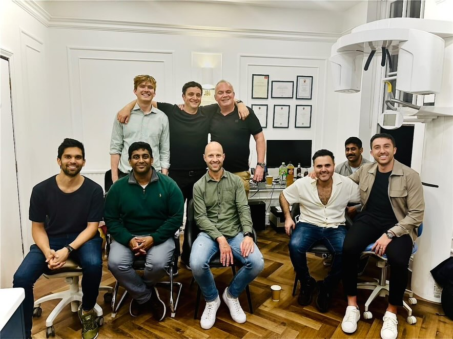

Implant Dentistry Course in London
Implant dentistry, taught in clinic
A six-month course of teaching, supervised clinical practice, and mentorship for dentists who want to place implants.
Most of the course is at 46 Harley Street. Teaching days are also planned at St Paul’s and the Royal Albert Hall.
What will I study?
The programme is delivered over 20 study days. Open a stage to see what each day covers.
Days 1–4
- Day 1 Introduction, learning outcomes, MImpDent exam + Surgical Skill 1
- Day 2 Implant Science 1
- Day 3 Implant Science 2
- Day 4 Patient selection / treatment planning + aseptic protocol
Days 5–9
- Day 5 CBCT training level 1
- Day 6 CBCT training level 2
- Day 7 Guided surgery training
- Day 8 Drugs & sedation + Consent, Record keeping, & Marketing
- Day 9 Surgical protocols + Live Surgery 1
Days 10–15
- Day 10 Guided Bone Regeneration + Surgical Skill 2
- Day 11 Flap design + suturing + Surgical Skill 2. Live Surgery 2
- Day 12 Surgical skill on pig’s heads
- Day 13 Advanced techniques — Sinus augmentation, Block grafting, Full-arch implants
- Day 14 Occlusion & Implant restoration 1
- Day 15 Occlusion & Implant restoration 2
Days 16–20
- Day 16 Maintenance + complications + MCQ examination
- Day 17 Case presentations
- Day 18 Mentored case 1 & 2
- Day 19 Mentored case 3 & 4
- Day 20 Mentored case 5
On completion, delegates will be awarded 120 verifiable CPD hours. The course also aims to help prepare delegates who wish to sit the MImpDent RCS (Ed) examination.

Meet the course lead
Dr Anthony James
Principal Clinician at The Harley Street Dental Implant Centre
Dr Anthony James qualified from King’s College London in 2011. He worked in Oral and Maxillofacial Surgery, progressing from Junior Doctor to Specialty Doctor, and held the position of Clinical Lecturer in Oral Surgery at the University of Bristol.
He has completed a postgraduate diploma in dental implantology and mentors dentists who are developing their implant work. He is also an examiner for the Faculty of Dental Surgery at the Royal College of Surgeons of England.
Course details
When does the course run?
The inaugural cohort was scheduled for May to November 2026. Further courses are planned for 2027. Contact the team for upcoming dates and availability.
Where does it take place?
The course is based at the Harley Street clinic in London. Teaching days are also planned at St Paul’s and the Royal Albert Hall. The team will provide the venue and schedule for each study day.
How many places are available?
The planned cohort size is approximately 10 delegates, allowing for focused mentorship.
How much does the course cost?
Contact the team for the confirmed course fee and details of what it includes.
Is payment needed to register interest?
No payment is needed at registration. The team will provide payment details before you commit to a place.
Learn through clinical practice
This course is designed for dentists who want to begin or expand their work in implant dentistry. It combines structured teaching with opportunities to develop practical skills under the guidance of experienced implant mentors.
Delegates will have the opportunity to place up to 15 dental implants on live patients under direct supervision. The number of placements available to each delegate will be confirmed before registration.
Who is the course for?
The course is intended for clinicians with at least two years of clinical experience who are looking for hands-on mentorship as they develop their implant practice.
Course sponsor
Sponsored by Nobel Biocare
The course is sponsored by Nobel Biocare. Delegates will be given details of any available offers.
Ask about the next cohort
Email the clinic for upcoming dates, the confirmed fee, and the syllabus. Nothing is sent from a form on this page, and no payment is taken here.